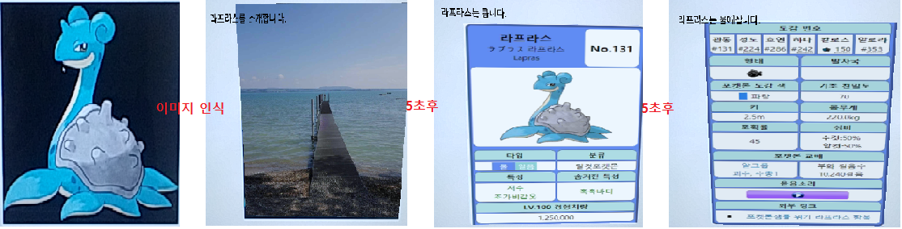
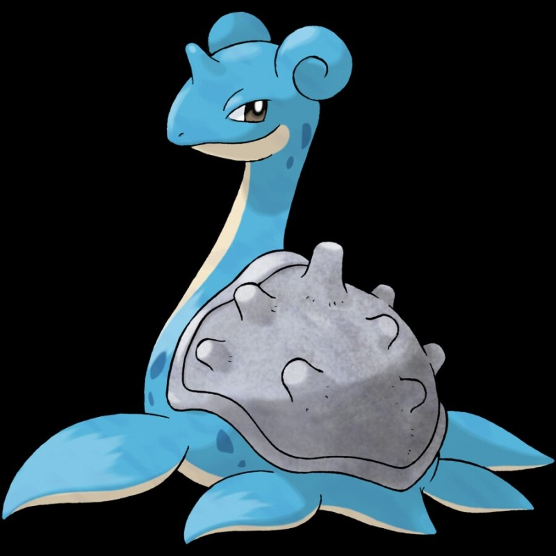

- 들어가기전에...
해당 튜토리얼은 https://docs.unity3d.com/Packages/com.unity.xr.arfoundation@2.1/manual/index.html 페이지를 참조하여 작성되었다.
실행한 Unity 환경은 2019.1.10.f1 버전, AR Foundation 버전은 2.1.1 이다.
AR Foundation 1.0 버전과 2.0 버전은 차이점이 조금 존재하므로 왠만하면 2.0 버전을 사용하도록 한다.
다만 현재 튜토리얼 자료가 없어 AR Foundation 2.1 Sample을 보고 분석한 점을 아래와 같이 작성한다.
- 계획
이 예제에서 우리는 핸드폰 카메라로 이미지를 탐색하고,
이미지가 탐색되면 이미지에 대한 간단한 소개를 슬라이드 형식으로 보여주려고 한다.

- 먼저 Unity에서 3d 프로젝트를 하나 만든다
- 프로젝트 세팅
ar foundation을 적용하기 위해서는 옵션 설정이 필요하다. 안드로이드 기준으로 설명한다.
1-1. Edit > ProjectSettings > Player > Android
- Vulkan Library 제거 : ARCore에서 지원하지 않는다 제거하자

- Multithread Rendering : 지원하지 않는다 체크해제

- Android 최소버전 7.0으로 지정 : AR을 사용할 수 있는 최소한의 버전이다

- ARM 선택 : ARM 외의 아키텍쳐는 지원하지 않는다

- 패키지이름 설정 : com.corona.artrack 형식으로 패키지이름 도 세팅해준다
1-2. Window > Package Manager
AR Foundation 패키지를 다운받는다

위 두 패키지를 다운받으면 된다. ( 아이폰의 경우 ARKit Plugin을 다운받으면 된다. )
- 주의 : 절대 다른 버전을 다운받지 않는다 ( AR Foundation 은 아직 불안정하다. 다른 실험적인 버전은 다운받지 않는다. )
- 주의 : Unity 또한 프리뷰 버전은 받지 않는다. 현재 AR 커뮤니티에서 가장 안정적인 버전은 2019.1.10.f1 이다. ( 실험적인 마음으로 alpha 버전을 다운받게 되면 새로운 느낌의 버그를 느껴볼 수 있을 것이다. )
1-3. File > Build Setting
화면 세팅을 하기위해 안드로이드로 설정을 변경한다.
Switch Platform 버튼을 눌러 플랫폼을 변경한다. ( 버튼이 안보이면 이미 지정된 것이므로 굳이 찾을필요 없다. )

게임 화면의 좌측 상단에 Portrait로 입력된 부분을 클릭한다.
화면사이즈를 1920x1080으로 변경한다. ( 기본 세팅은 PC 환경에 맞게 설정되어 있어 핸드폰에 맞도록 변경한다 )

- AR 세션 생성
AR Session, AR Session Origin을 Hierachy에서 마우스 우클릭을 눌러 생성한다.
Hierachy에서 마우스 우클릭 > XR > AR Session, AR Session Origin 둘다 생성

위와 같이 Hierachy가 구성될 것이다.
만약 Main Camera가있다면 삭제해주자.
왜냐하면 AR Session Origin에 Camera가 포함되어 있다.

위와같이 AR Camera를 클릭한다

Inspector의 Tag를 MainCamera로 바꿔준다. ( AR Camera를 MainCamera로 인식되도록 해주는 작업이다 )
- AR TrackImage 설정
3-1. AR Session Origin에 아래 컴포넌트를 추가한다

3-2. Track할 이미지 리스트를 만든다
- 프로젝트뷰에서 Asset > 04. Images 디렉토리를 생성한다

- 04. Images 디렉토리를 우클릭 후 > XR > ReferenceImageLibrary를 생성한다
- 인터넷에서 라프라스를 검색하여 이미지를 다운받은 후 04. Images 폴더 안에 넣는다. ( 필자는 사심이 들어가 있지 않다. 적당한 이미지여서 골랐을뿐. 라프라스 이미지가 좋지만 다른 이미지를 사용해도 문제가 되진 않는다. 하지만 라프라스 이미지를 추천한다. )

- ReferenceImageLibrary에서 Add Image 클릭 > Select를 클릭하여 라프라스 이미지를 넣는다.
아래 이미지 에서는 Specify Size를 넣지 않았으나, Specify Size를 설정하여 현실세계의 크기를 지정할 수 있다.

- 이제 AR Session Origin에다가 우리가 만든 ReferenceImageLibrary를 끌어다 놓는다. 물론 Reference Library 란에다가 넣어줘야 된다.

3-3. Track한 이미지를 대체할 3D 오브젝트를 만든다
- Hierachy에서 마우스 우클릭 > Create Empty
비어있는 게임 오브젝트를 생성한다.
- 이름을 ReplacePrefab으로 지정한다

- ReplacePrefab 우클릭 > CreateEmpty
- ReplacePrefab>CreateEmpty 우클릭 > 3D Object Plane
-> Inspector에서 Mesh Collider 삭제 ( 콜라이더 사용을 안할 것이므로 )
-> 매터리얼 지정, 만든 매터리얼을 Inspector에 끌어다 놓으면 된다. (아래 매터리얼 만들기 참조)
- Inspector의 옵션은 Rotation, Scale 부분을 동일하게 맞추면 된다.

- 매터리얼 만들기
-> 프로젝트에서 02. Material 디렉토리 생성
-> 디렉토리에서 마우스 우클릭 > Create > Material
-> Shader 지정 : Mobile / Diffuse
-> texture 지정 : 아무 이미지나 다운받아 올린다. 필자가 설정한 이미지는 NormalImage.jpg를 넣어놨다.
-> 이미지는 미리 3~4개정도 Images 디렉토리에 넣어놓는다. (추후사용)

- ReplacePrefab 우클릭 > UI > Canvas
캔버스를 생성한다. Event System 오브젝트는 자동 생성되는 오브젝트 이므로 절대 삭제하지 않는다. (Canvas의 이벤트를 관리하는 오브젝트)
아래 설정을 참조한다.
Rotation : 90, Dynamic Pixels Per Unit : 15000 을 꼭 적용해야된다.

- Canvas 우클릭 > UI > Text
캔버스 밑에 텍스트를 생성한다. 이제 게임 화면을 보면 텍스트가 희미하게 보일 것이다.
Inspector에서 텍스트의 설정을 이미지와 같이 입력한다.

여기서 Anchors 옵션이 매우 중요한데, 관련된 내용은 Unity 문서를 참조하길 바란다.
- 이제 우리가 만든 GameObject인 ReplacePrefab을 프로젝트로 옮긴다.
필자의 경우 03. Prefab 디렉토리를 만든 후 거기에 넣었다.
이렇게 하면 GameObject는 Prefab이 되어 프로젝트에 저장된다.
Hierarchy에 있는 ReplacePrefab은 삭제한다.

이제 만들어진 Prefab을 더블클릭하여 열어보면 아래와 같이 보일 것이다. (필자의 경우 Anchor 옵션을 왼쪽위로가게 했기 때문에 텍스트가 왼쪽위에있다.)

3-4. ReplacePrefab을 AR Session Origin>AR Tracked Image Manager에 연결한다.
Tracked Image Prefab은 에 연결시키면 된다.

- 이미지를 컨트롤할 스크립트를 작성한다
- 자 이제 즐거운 코딩의 시간이다.
- Project에서 01. Scripts 디렉토리를 만든다.
- 마우스 우클릭 후 C# Script를 생성하고, 이름을 ImageManager로 지정한다.
4-1. using
소스코드에 아래 3가지 패키지를 임포트한다
using UnityEngine.XR.ARFoundation;
using UnityEngine.XR.ARSubsystems;
using UnityEngine.UI;
4-2. 변수선언
해당 소스코드에서 사용할 변수를 선언한다
Camera _camera; // 카메라
ARTrackedImageManager _arTrackedImageManager; // 이미지 트래킹 매니저( 우리가 넣어놓은 이미지가 트래킹되면, 이벤트에서 ReplacePrefab을 리턴해준다 )
[SerializeField] List<Texture> _texture; // 보여줄 텍스쳐 리스트( SerializeField 지정을 하면 에디터에서 값을 넣을 수 있다 )
float _time = 0; // 타이머
4-3. 변수초기화
// Awake의 경우 프레임이 작동하기 전에 실행되므로 초기화 할 경우 사용하면 좋다. ( Start 보다 먼저 작동한다 )
private void Awake()
{
// AR Camera를 가져온다
_camera = transform.GetComponentInChildren<Camera>();
// 프레임이 작동하기전에 미리 ARTrackedImageManager 컴포넌트를 초기화한다.
_arTrackedImageManager = GetComponent<ARTrackedImageManager>();
}
4-4. GameObject 활성화 비활성화시 이벤트 함수를 지정해준다
// GameObject가 활성화 될때 작동한다
private void OnEnable()
{
// OnTrackedImagesChanged 함수를 _arTrackedImageManager.trackedImagesChanged 변수에 람다형식으로 더한다
// trackedImagesChanged 는 트래킹하는 이미지가 변경될 경우 발생하는 이벤트 함수이다. C언어의 Function 변수와, Java의 람다식과 같은 기능으로 보면 된다.
// 그러므로 해당 소스코드는 트래킹하는 이미지가 변경될 경우 OnTrackedImagesChanged 함수를 호출하도록 해주는 코드로 보면 된다.
_arTrackedImageManager.trackedImagesChanged += OnTrackedImagesChanged;
}
// GameObject가 비활성화 될때 작동한다
private void OnDisable()
{
// OnTrackedImagesChanged 함수를 _arTrackedImageManager.trackedImagesChanged 변수에서 뺀다
_arTrackedImageManager.trackedImagesChanged -= OnTrackedImagesChanged;
}
4-5. OnTrackedImagesChanged 함수를 만든다
위에서 trackedImagesChanged += OnTrackedImagesChanged 로 지정해 주었으므로,
ARTrackedImageManager에서 탐색된 이미지가 변경될 때마다 trackedImagesChanged를 호출해 줄 것이고,
이는 대입된 함수인 OnTrackedImagesChanged 함수를 호출해 줄 것이다.
OnTrackedImagesChanged 함수를 정의한다.
void OnTrackedImagesChanged(ARTrackedImagesChangedEventArgs eventArgs)
{
foreach (var trackedImage in eventArgs.added) // eventArgs.added는 추가로 트래킹된 이미지 리스트 이다.
{
// Give the initial image a reasonable default scale
trackedImage.transform.localScale = new Vector3(0.01f, 1f, 0.01f);
UpdateInfo(trackedImage);
}
foreach (var trackedImage in eventArgs.updated) // eventArgs.updated는 변경된 트래킹 이미지 리스트 이다.
UpdateInfo(trackedImage);
}
4-6. UpdateInfo 함수를 작성한다
우리가 이전에 만들었던 ReplacePrefab이 파라미터로 들어오면,
여기서 CANVAS의 카메라를 AR 카메라로 변경시켜,
CAVAS의 텍스트가 카메라로 보이게 만든다.
void UpdateInfo(ARTrackedImage trackedImage)
{
// CAVAS의 카메라를 AR 카메라로 변경한다
var canvas = trackedImage.GetComponentInChildren<Canvas>();
canvas.worldCamera = _camera;
// 우리가 만든 Prefab의 텍스트, 이미지를 가져온다
var text = canvas.GetComponentInChildren<Text>();
var planeParent = trackedImage.transform.GetChild(0).gameObject;
var plane = planeParent.transform.GetChild(0).gameObject;
// 트래킹된 상태이면 아래 내용을 진행한다
// 타이머를 작동시키고, 시간에따라 텍스트,텍스처(이미지)를 변경시킨다.
if (trackedImage.trackingState != TrackingState.None)
{
_time += Time.deltaTime; // 델타타입은 1초/프레임수를 의미한다. 그러므로 +=을 할경우 경과된 시간을 의미한다 (10fps일경우 0.1초)
plane.SetActive(true);
// The image extents is only valid when the image is being tracked
trackedImage.transform.localScale = new Vector3(trackedImage.size.x, 1f, trackedImage.size.y);
// 텍스쳐 설정
var material = plane.GetComponent<MeshRenderer>().material;
// 5초동안
if ( _time < 5.0f)
{
text.text = string.Format("라프라스를 소개합니다.");
material.mainTexture = _texture[0];
}
// 10초동안
else if( _time < 10.0f )
{
material.mainTexture = _texture[1];
text.text = string.Format("라프라스는 큽니다.");
}
// 15초동안
else if( _time < 15.0f )
{
material.mainTexture = _texture[2];
text.text = string.Format("라프라스는 물에삽니다.");
}
// 그이후 초기화
else if( _time >= 15.0f )
{
_time = 0.0f;
}
}
else
{
plane.SetActive(false);
}
- 스크립트 및 텍스처 연결
5.1 ImageManger 스크립트를 AR Session Origin에 드래그앤 드롭한다

5.2 Inspector의 ImageManger를 보면 Texture 가 있다.
텍스처를 3개 넣을 것이므로 Size를 3으로 하고, 각 이미지들을 드래그앤 드롭으로 넣는다.
- 빌드
6-1. File > BuildSettings 를 연다.
6-2. Run Device를 확인하고 Build And Run을 클릭한다.

- Run Device에 자신의 기기가 보이지 않는다면, 핸드폰 제조사 홈페이지에 가서 USB 드라이버를 다운받아 설치한다.